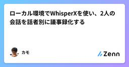
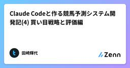
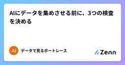
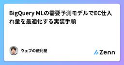
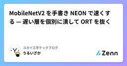
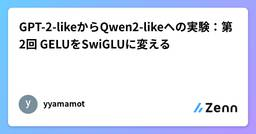
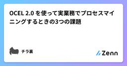
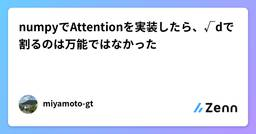

Zennの「機械学習」のフィード
フィード

【音響物理×LLM】耳介の干渉ノッチをRoPEに拡張し、類似トークンを識別・消去する「SN-RoPE」
Zennの「機械学習」のフィード
1. はじめに：耳介が解く「等距離・正中面問題」とLLMの課題人間は、両耳からの距離が等しい正中面上（左右差 ITD / ILD がゼロの領域）であっても、音源の上下位置（仰角）を一意に判別できます。これを可能にしているのが耳介（Pinna）の複雑な凹凸による物理的な位相干渉（スペクトルノッチ）です。一方、現在のLLM（Transformer）は「埋め込みベクトル上の距離（コサイン類似度）が非常に近いトークン」同士の判別に苦慮しています。前提・反論・結論といった論理的役割が異なっていても、意味的に類似しているとアテンションが漏れ出し（Attention Leakage）、ハルシネ...
5時間前

実写画像のOCRで、CPU専用モデルを2つに分けた理由
Zennの「機械学習」のフィード
実際の写真から文字と識別番号を読み取るOCRを、GPUなしで動かす必要がありました。要件を詰めていく中で、1つのモデルに全言語を任せるのではなく、2つの独立したエンドポイントに分けるという判断をしました。この記事では、その設計判断の理由と、実装で気をつけた点を書きます。 なぜ1つの汎用モデルにしなかったのか最初に検討したのは、多言語対応の汎用OCRモデル1つで、英語・日本語・ベトナム語をまとめて処理する構成でした。しかし、ベトナム語には声調記号があり、これが多言語モデルでは正しく認識されないという問題にぶつかりました。「Sản phẩm Việt Nam」という文字列が「Sn p...
7時間前

TimesFM 3.0 でスーパーの米価格を予測する
Zennの「機械学習」のフィード
Google の時系列基盤モデル TimesFM 3.0 で、報道でよく見る「スーパーの米 5kg が○○円」の 6 ヶ月先を予測してみました。ゼロショット、つまり米のデータで学習させることは一切していません。過去の系列をそのまま入力して、6 ヶ月先までの分布を出させています。結論を先に書くと、「来月も再来月も先月と同じ値段」と言い張るだけの予測に、精度で勝てませんでした。モデルが出す 1 本の数値（点予測）はそういう水準です。月次の米価は平常時なら 1 ヶ月で数 % しか動かないので、横ばいと答えておけばだいたい当たる。点予測で大きく勝つ余地がそもそもありません。勝...
10時間前

ローカル環境でWhisperXを使い、2人の会話を話者別に議事録化する
Zennの「機械学習」のフィード
ローカル環境でWhisperXを使い、2人の会話を話者別に議事録化する はじめに最近、インタビューを行う機会がありました。インタビューでは、インターネット接続が安定しない場所で話すことが多く、オフレコとして扱うべき内容も含まれていました。そこで、会話を録音しておき、あとからローカル環境で文字起こしと整理を行うことにしました。実現したかった流れは次のとおりです。会話を録音する ↓WAVファイルをローカルで文字起こしする ↓話者ごとに発言を分ける ↓JSONやTXTとして保存する ↓AIで議事録にまとめるこのプロジェクトの目的は、会話中に細かくメモ...
11時間前
Reservoir Computing の基本と簡易検証
Zennの「機械学習」のフィード
はじめに昔 Reservoir Computing (RC) の研究をしていたのですが、最近ふと始めたくなりまして、復習がてら備忘録と各種検証結果を都度まとめていこうと思います。RC については日本語の記事もあるのですが数としては少なく、今まで研究してきた身としてはちょっと悲しいなぁと思っていました。「なら自分で書けば良いかぁ」ということで、もしこの記事が誰かの役に立てば幸いです。 1. RC の概略一般的にはあまり市民権を得ていないモデルかなと思うので、簡単な概略を書いておきます。 1.1 何を固定して、何を学習するのかRC は RNN の一種です。中間層にあたる部...
13時間前

Claude Codeと作る競馬予測システム開発記(4) 買い目戦略と評価編
Zennの「機械学習」のフィード
はじめに前回は、特徴量エンジニアリングと、JRA・NAR・ばんえいでモデルを分離した判断について書きました。第4回となる今回は、モデルが出した予測確率を「どう買い目に変換するか」「いくら賭けるか」「複数の戦略をどう評価するか」について書きます。実はここが一番泥沼だった領域で、今回は「うまくいった話」よりも「思ったほどうまくいかなかった話」が中心になります。 期待値（EV）ベースの買い目選択素朴なアプローチは「予測確率が一番高い馬に賭ける」ですが、これは市場のオッズを無視しています。同じ勝率30%の馬でも、オッズ2倍なら割に合わず、オッズ10倍なら美味しい、というのが競馬の期...
17時間前

AIにデータを集めさせる前に、3つの検査を決める
Zennの「機械学習」のフィード
ボートレースAIを作る第1歩は、学習用データを集めることです。ここは生成AIが得意そうに見えます。「公式サイトから1年分取ってきて」と頼めば、数十秒でPythonコードが返ってきます。実際、ダウンロード自体はそれほど難しくありません。難しいのは、そのコードが静かに取りこぼしても動き続けることです。今回は、BOAT RACE公式サイトが配布する番組表と競走成績を題材にします。モデルはまだ作りません。まず「予定した日数ぶんあるか」「空ではないか」「番組表と成績が対応しているか」の3点を検査します。この回の人間の仕事：AIに「集めて」と頼む前に、何をもって取得成功とするかを決める。...
1日前

BigQuery MLの需要予測モデルでEC仕入れ量を最適化する実装手順
Zennの「機械学習」のフィード
はじめに「季節が変わると売れ筋が変わるのはわかっているのに、いつも仕入れ量が合わない」「売り切れで機会損失が出るか、過剰在庫で資金が眠るかの繰り返し」——そうした悩みを抱えるEC事業者の方は少なくないでしょう。仕入れ判断をベテランスタッフの経験や勘に頼っている場合、属人化によるリスクも伴います。担当者が変わるたびに精度がブレるという声もよく耳にします。そこで本記事では、Google Cloudが提供する BigQuery ML を活用して、過去の販売データ・サイトアクセスデータをもとに需要予測モデルを構築し、仕入れ計画へ組み込む手順をご紹介します。SQLを中心とした実装なので、...
1日前

MobileNetV2 を手書き NEON で速くする — 遅い層を個別に潰して ORT を抜く
Zennの「機械学習」のフィード
はじめに前回、テンソルのレイアウトを NCHW から NHWC に変えて、MobileNetV2 の backbone を 68 ms から 40 ms まで速くしました。ここまでは全層に効く「一律の」最適化でした。レイアウトを変えればどの層も連続アクセスになり、まとめて速くなります。ただしそこから ORT のシングルスレッド（Pi5 実測 33 ms）まではあと 7 ms 残っていて、この差はもう一律には縮みません。前回の per-layer 内訳で、突出して重い層が見えていました。層40 ms 時点割合stem（最初の 3×3 conv）7.25 ...
1日前

AIに競艇予想モデルを作らせる。その数字を信じるのは人間の仕事です
Zennの「機械学習」のフィード
プログラミング未経験でも、予想モデルのひな型を作れる時代になりました。AIに「過去データを集めて」「LightGBMで1着を予測して」「結果を画面に表示して」と頼めば、コードを書いてくれます。エラー画面を渡せば修正もしてくれます。しかし、AIに任せきれない仕事が一つあります。出来上がった数字を信じてよいか決めることです。 コードは動いていた。それでも回収率380%は再現しなかった私は、三世代・十数種類のボートレース予想モデルを作り、約120万レースの記録を使って検証してきました。その途中で、バックテスト回収率380%のモデルができました。実際に動かすと、3日間の回収率は1...
1日前

自動的に格納したファイルを適切なフォルダに格納するにはどう判定していくか考えてみる
Zennの「機械学習」のフィード
はじめに紙の申請書をスキャンして電子アーカイブに入れるとき、必ず発生するのが「これ、どのフォルダに入れるんだっけ？」「ファイル名はどう付けるんだっけ？」という判断です。文書量が多い組織ほどこの判断コストが積み上がり、命名や格納のばらつきが後の検索性を壊していきます。この記事は、自治体の文書管理を題材に、スキャン PDF を投げると「格納先フォルダ候補」と「命名規則に沿ったファイル名」を根拠付きで提案してくれる仕組みを AWS 上で個人検証として作ってみた記録です。!本記事の内容はすべて個人の検証です。登場する帳票・人物・団体（「みどり市」等）はすべて架空で、実在の組織・データ...
2日前

GPT-2-likeからQwen2-likeへの実験：第2回 GELUをSwiGLUに変える
Zennの「機械学習」のフィード
GPT-2-likeからQwen2-likeへの実験：第2回 GELUをSwiGLUに変えるGPT-2-likeからQwen2-likeへ、少しずつ構造を変更する実験の第2回です。今回はGELUをSwiGLUへ変更します。第1回では、LayerNormをRMSNormへ変更しました。学習は速くなりましたが、Lossは少し悪化。今回は逆で、学習は少し遅くなりましたが、Lossはかなりわかりやすく改善しました。先に結果を書くと下記です。検証Lossは5つすべてのseedで改善したTop-1正解率も5つすべてのseedで改善したほぼ同じパラメーター数だが、学習時間は少し増えた...
2日前

[レビュー] GoogleのTimesFM-3をリリース直後に自分で検証しました：ゼロショットは本物、目玉機能はまだ
Zennの「機械学習」のフィード
原文: han-co.com ·「金融データサイエンス」連載の「レビュー」編です。Googleが2026年8月31日に時系列基盤モデルTimesFM-3を公開しました。発表文は、三つのベンチマークで事前学習モデルのうち1位だと述べています。そこで自分で検証しました。この記事が発表文の要約と違う点は二つです。一つは、私が選んだ公開データで古典的な統計モデルとGBMまで同じ条件で比較したこと。もう一つは、モデルが学習しようのなかった期間を切り分けて成績を比べたことです。1兆を超える時点で学習したモデルが、公開ベンチマークをすでに覚えてしまっているのではないかを確かめたかったのです。先に...
2日前

Kaggle AI Agent Securityコンペ振り返り ー345th Place Solution
Zennの「機械学習」のフィード
はじめにFusicのレオナです。今回は、Kaggleの「AI Agent Security - Multi-Step Tool Attacks」[1]に参加しました。最終結果は4,186チーム中345位、スコア6.675で銅メダル。Public Leaderboard(以下、Public LB)では良く見えた本命がPrivate Leaderboard(以下、Private LB)で落ちましたが、2本目に別ルートのヘッジ案を残していたおかげでスコアがつきました。[2]その過程を振り返り、ブログに残します。 コンペ概要「AI Agent Security - Multi-St...
2日前

フレーム問題とは？AIの古典的難問
Zennの「機械学習」のフィード
AI研究の歴史を語るうえで欠かせない古典的難問が「フレーム問題」です。G検定でもAIの歴史や哲学的課題を扱う領域で問われる基礎概念であり、現代の生成AI時代でも本質的に解決されていないテーマとして知られています。本記事では、その定義と関連用語との違いを整理します。 フレーム問題とはフレーム問題とは、1969年にジョン・マッカーシーとパトリック・ヘイズが提唱した問題で、AIが何らかの行動を起こす際に、その行動によって変化しない事柄を有限の記述で表現することが原理的に困難であるという問題を指します。言い換えると、AIが世界の中で行動するとき、「何が変わるか」だけでなく「何が変わらない...
3日前

OCEL 2.0 を使って実業務でプロセスマイニングするときの3つの課題
Zennの「機械学習」のフィード
ヌーラボブログリレー2026 夏 14日目としてのポストです。前回まで、イベントログを掘って数字にして打ち手に落とすところまでやりました。ただ振り返ると、時間の大半は分析ではなくログの調整に使っていたんですよね。体感で分析が2割、調整が8割。なぜそんなに手がかかるのか。相手が実業務のログだからです。機械的に処理できるシンプルな記録ではありえません。特に Backlog のような課題管理ツールや kintone のようなデータベース型の業務アプリ、つまり業務専用に設計されていない汎用ツールの記録が相手だと、分析手法より手前の壁にぶつかります。整理すると3つでした。信頼できるケー...
3日前

numpyでAttentionを実装したら、√dで割るのは万能ではなかった
Zennの「機械学習」のフィード
はじめにTransformerのSelf-Attentionを、計算式から実装した。Attentionは「文章の中でどの単語がどの単語と深く関係しているか」を計算し、重要な部分に重みを置いて文脈を捉える仕組みである。今回は実装を通して次を理解した。なぜこの計算式になるのかなぜ次元数のルートで割るのか結論から言うと、√dで割るのは万能ではなかった。 変えたことsoftmax / init_weights / attention をnumpyで実装スコアを割る数を raw / √d / d の3通りで比較できるようにした初期化のスケールをOFFにできる s...
3日前
Kaggle Pokémon TCG AI Battle Challenge ポケカコンペ振り返りーメダルなし
Zennの「機械学習」のフィード
はじめにFusicのレオナです。今回は、Kaggleの「The Pokémon Company - PTCG AI Battle Challenge Simulation」に参加してみました。最終結果は6,807チーム中1,160位、スコア797.4。暫定ランキングでは一時的に39位まで上がりましたが、最後まで維持できず、メダルには届きませんでした。その過程を振り返り、ブログに残します。なお筆者はポケモンカードゲーム(以下、ポケカ)未経験です。 コンペ概要「The Pokémon Company - PTCG AI Battle Challenge Simulation」は...
3日前

Instagramのリーチ予測モデル -「新規アカウント収集・モデル再学習」の自動化と監視を実装した
Zennの「機械学習」のフィード
個人開発者・小規模ブランド向けの「ナノインフルエンサー検索」を作っています。YouTube / Instagram の公開データを集めてDB化し、投稿のリーチやエンゲージメントを予測するサービスです。サービス：https://indie-matching-v2-azure.vercel.app前回の記事ではInstagramの予測モデルについて書きました。今回はデータを集めてモデルを再学習するパイプラインを自動化した話です。前回の記事：https://zenn.dev/rikky300/articles/feeec089571c01 自動化する前の状態パイプライン自体は既...
3日前

25億token学習したGPT-2 Smallに、さらに25億token学習させたら性能は上がるのか？
Zennの「機械学習」のフィード
25億token学習したGPT-2 Smallに、さらに25億token学習させたら性能は上がるのか？GPT-2 Small相当のモデルをゼロから実装し、まず25億tokenを事前学習しました。ここで、一つ疑問が出てきました。このモデルに、さらに25億tokenを学習させたら性能は上がるのでしょうか？単純に考えれば、より多くのデータを学習したモデルの方が性能も良くなりそうです。そこで、25億token学習済みのcheckpointから、データ構成を変えてさらに25億tokenの継続学習を行いました。累計では約50億tokenです。結論から言うと、すべての性能が上がったわ...
4日前